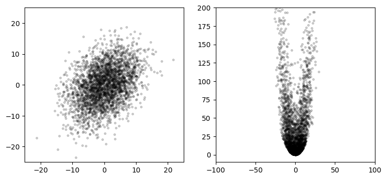

%matplotlib inlineParticle Filters
!pip install filterpy
!unzip kf_book.zip#format the book
#import book_format
#book_format.set_style()Motivation
Here is our problem. We have moving objects that we want to track. Maybe the objects are fighter jets and missiles, or maybe we are tracking people playing cricket in a field. It doesn’t really matter. Which of the filters that we have learned can handle this problem? Unfortunately, none of them are ideal. Let’s think about the characteristics of this problem.
multimodal: We want to track zero, one, or more than one object simultaneously.
occlusions: One object can hide another, resulting in one measurement for multiple objects.
nonlinear behavior: Aircraft are buffeted by winds, balls move in parabolas, and people collide into each other.
nonlinear measurements: Radar gives us the distance to an object. Converting that to an (x,y,z) coordinate requires a square root, which is nonlinear.
non-Gaussian noise: as objects move across a background the computer vision can mistake part of the background for the object.
continuous: the object’s position and velocity (i.e. the state space) can smoothly vary over time.
multivariate: we want to track several attributes, such as position, velocity, turn rates, etc.
unknown process model: we may not know the process model of the system.
None of the filters we have learned work well with all of these constraints.
Discrete Bayes filter: This has most of the attributes. It is multimodal, can handle nonlinear measurements, and can be extended to work with nonlinear behavior. However, it is discrete and univariate.
Kalman filter: The Kalman filter produces optimal estimates for unimodal linear systems with Gaussian noise. None of these are true for our problem.
Unscented Kalman filter: The UKF handles nonlinear, continuous, multivariate problems. However, it is not multimodal nor does it handle occlusions. It can handle noise that is modestly non-Gaussian, but does not do well with distributions that are very non-Gaussian or problems that are very nonlinear.
Extended Kalman filter: The EKF has the same strengths and limitations as the UKF, except that is it even more sensitive to strong nonlinearities and non-Gaussian noise.
Monte Carlo Sampling
In the UKF chapter I generated a plot similar to this to illustrate the effects of nonlinear systems on Gaussians:
#import kf_book.pf_internal as pf_internal #version difference caused error here, dont worry about running this
#pf_internal.plot_monte_carlo_ukf() #version difference caused error here, dont worry about running this
The left plot shows 3,000 points normally distributed based on the Gaussian
\[\mu = \begin{bmatrix}0\\0\end{bmatrix},\, \, \, \Sigma = \begin{bmatrix}32&15\\15&40\end{bmatrix}\]
The right plots shows these points passed through this set of equations:
\[\begin{aligned}x&=x+y\\ y &= 0.1x^2 + y^2\end{aligned}\]
Using a finite number of randomly sampled points to compute a result is called a Monte Carlo (MC) method. The idea is simple. Generate enough points to get a representative sample of the problem, run the points through the system you are modeling, and then compute the results on the transformed points.
In a nutshell this is what particle filtering does. The Bayesian filter algorithm we have been using throughout the book is applied to thousands of particles, where each particle represents a possible state for the system. We extract the estimated state from the thousands of particles using weighted statistics of the particles.
Generic Particle Filter Algorithm
- Randomly generate a bunch of particles
Particles can have position, heading, and/or whatever other state variable you need to estimate. Each has a weight (probability) indicating how likely it matches the actual state of the system. Initialize each with the same weight.
- Predict next state of the particles
Move the particles based on how you predict the real system is behaving.
- Update
Update the weighting of the particles based on the measurement. Particles that closely match the measurements are weighted higher than particles which don’t match the measurements very well.
- Resample
Discard highly improbable particle and replace them with copies of the more probable particles.
- Compute Estimate
Optionally, compute weighted mean and covariance of the set of particles to get a state estimate.
This naive algorithm has practical difficulties which we will need to overcome, but this is the general idea. Let’s see an example. I wrote a particle filter for the robot localization problem from the UKF and EKF chapters. The robot has steering and velocity control inputs. It has sensors that measures distance to visible landmarks. Both the sensors and control mechanism have noise in them, and we need to track the robot’s position.
Here I run a particle filter and plotted the positions of the particles. The plot on the left is after one iteration, and on the right is after 10. The red ‘X’ shows the actual position of the robot, and the large circle is the computed weighted mean position.
pf_internal.show_two_pf_plots()If you are viewing this in a browser, this animation shows the entire sequence:

After the first iteration the particles are still largely randomly scattered around the map, but you can see that some have already collected near the robot’s position. The computed mean is quite close to the robot’s position. This is because each particle is weighted based on how closely it matches the measurement. The robot is near (1,1), so particles that are near (1, 1) will have a high weight because they closely match the measurements. Particles that are far from the robot will not match the measurements, and thus have a very low weight. The estimated position is computed as the weighted mean of positions of the particles. Particles near the robot contribute more to the computation so the estimate is quite accurate.
Several iterations later you can see that all the particles have clustered around the robot. This is due to the resampling step. Resampling discards particles that are very improbable (very low weight) and replaces them with particles with higher probability.
I haven’t fully shown why this works nor fully explained the algorithms for particle weighting and resampling, but it should make intuitive sense. Make a bunch of random particles, move them so they ‘kind of’ follow the robot, weight them according to how well they match the measurements, only let the likely ones live. It seems like it should work, and it does.
Probability distributions via Monte Carlo
Suppose we want to know the area under the curve \(y= \mathrm{e}^{\sin(x)}\) in the interval [0, \(\pi\)]. The area is computed with the definite integral \(\int_0^\pi \mathrm{e}^{\sin(x)}\, \mathrm{d}x\). As an exercise, go ahead and find the answer; I’ll wait.
If you are wise you did not take that challenge; \(\mathrm{e}^{\sin(x)}\) cannot be integrated analytically. The world is filled with equations which we cannot integrate. For example, consider calculating the luminosity of an object. An object reflects some of the light that strike it. Some of the reflected light bounces off of other objects and restrikes the original object, increasing the luminosity. This creates a recursive integral. Good luck with that one.
However, integrals are trivial to compute using a Monte Carlo technique. To find the area under a curve create a bounding box that contains the curve in the desired interval. Generate randomly positioned point within the box, and compute the ratio of points that fall under the curve vs the total number of points. For example, if 40% of the points are under the curve and the area of the bounding box is 1, then the area under the curve is approximately 0.4. As you tend towards infinite points you can achieve any arbitrary precision. In practice, a few thousand points will give you a fairly accurate result.
You can use this technique to numerically integrate a function of any arbitrary difficulty. this includes non-integrable and noncontinuous functions. This technique was invented by Stanley Ulam at Los Alamos National Laboratory to allow him to perform computations for nuclear reactions which were unsolvable on paper.
Let’s compute \(\pi\) by finding the area of a circle. We will define a circle with a radius of 1, and bound it in a square. The side of the square has length 2, so the area is 4. We generate a set of uniformly distributed random points within the box, and count how many fall inside the circle. The area of the circle is computed as the area of the box times the ratio of points inside the circle vs. the total number of points. Finally, we know that \(A = \pi r^2\), so we compute \(\pi = A / r^2\).
We start by creating the points.
N = 20000
pts = uniform(-1, 1, (N, 2))A point is inside a circle if its distance from the center of the circle is less than or equal to the radius. We compute the distance with numpy.linalg.norm, which computes the magnitude of a vector. Since vectors start at (0, 0) calling norm will compute the point’s distance from the origin.
dist = np.linalg.norm(pts, axis=1)Next we compute which of this distances fit the criteria. This code returns a bool array that contains True if it meets the condition dist <= 1:
in_circle = dist <= 1All that is left is to count the points inside the circle, compute pi, and plot the results. I’ve put it all in one cell so you can experiment with alternative values for N, the number of points.
import matplotlib.pyplot as plt
import numpy as np
from numpy.random import uniform
N = 20000 # number of points
radius = 1.
area = (2*radius)**2
pts = uniform(-1, 1, (N, 2))
# distance from (0,0)
dist = np.linalg.norm(pts, axis=1)
in_circle = dist <= 1
pts_in_circle = np.count_nonzero(in_circle)
pi = 4 * (pts_in_circle / N)
# plot results
plt.scatter(pts[in_circle,0], pts[in_circle,1],
marker=',', edgecolor='k', s=1)
plt.scatter(pts[~in_circle,0], pts[~in_circle,1],
marker=',', edgecolor='r', s=1)
plt.axis('equal')
print(f'mean pi(N={N})= {pi:.4f}')
print(f'err pi(N={N})= {np.pi-pi:.4f}')This insight leads us to the realization that we can use Monte Carlo to compute the probability density of any probability distribution. For example, suppose we have this Gaussian:
from filterpy.stats import plot_gaussian_pdf
plot_gaussian_pdf(mean=2, variance=3);The probability density function (PDF) gives the probability that the random value falls between 2 values. For example, we may want to know the probability of x being between 0 and 2 in the graph above. This is a continuous function, so we need to take the integral to find the area under the curve, as the area is equal to the probability for that range of values to occur.
\[P[a \le X \le b] = \int_a^b f_X(x) \, dx\]
It is easy to compute this integral for a Gaussian. But real life is not so easy. For example, the plot below shows a probability distribution. There is no way to analytically describe an arbitrary curve, let alone integrate it.
pf_internal.plot_random_pd()We can use Monte Carlo methods to compute any integral. The PDF is computed with an integral, hence we can compute the PDF of this curve using Monte Carlo.
The Particle Filter
All of this brings us to the particle filter. Consider tracking a robot or a car in an urban environment. For consistency I will use the robot localization problem from the EKF and UKF chapters. In this problem we tracked a robot that has a sensor which measures the range and bearing to known landmarks.
Particle filters are a family of algorithms. I’m presenting a specific form of a particle filter that is intuitive to grasp and relates to the problems we have studied in this book. This will leave a few of the steps seeming a bit ‘magical’ since I haven’t offered a full explanation. That will follow later in the chapter.
Taking insight from the discussion in the previous section we start by creating several thousand particles. Each particle has a position that represents a possible belief of where the robot is in the scene, and perhaps a heading and velocity. Suppose that we have no knowledge of the location of the robot. We would want to scatter the particles uniformly over the entire scene. If you think of all of the particles representing a probability distribution, locations where there are more particles represent a higher belief, and locations with fewer particles represents a lower belief. If there was a large clump of particles near a specific location that would imply that we were more certain that the robot is there.
Each particle needs a weight - ideally the probability that it represents the true position of the robot. This probability is rarely computable, so we only require it be proportional to that probability, which is computable. At initialization we have no reason to favor one particle over another, so we assign a weight of \(1/N\), for \(N\) particles. We use \(1/N\) so that the sum of all probabilities equals one.
The combination of particles and weights forms the probability distribution for our problem. Think back to the Discrete Bayes chapter. In that chapter we modeled positions in a hallway as discrete and uniformly spaced. This is very similar except the particles are randomly distributed in a continuous space rather than constrained to discrete locations. In this problem the robot can move on a plane of some arbitrary dimension, with the lower right corner at (0,0).
To track our robot we need to maintain states for x, y, and heading. We will store N particles in a (N, 3) shaped array. The three columns contain x, y, and heading, in that order.
If you are passively tracking something (no control input), then you would need to include velocity in the state and use that estimate to make the prediction. More dimensions requires exponentially more particles to form a good estimate, so we always try to minimize the number of random variables in the state.
This code creates a uniform and Gaussian distribution of particles over a region:
from numpy.random import uniform
def create_uniform_particles(x_range, y_range, hdg_range, N):
particles = np.empty((N, 3))
particles[:, 0] = uniform(x_range[0], x_range[1], size=N)
particles[:, 1] = uniform(y_range[0], y_range[1], size=N)
particles[:, 2] = uniform(hdg_range[0], hdg_range[1], size=N)
particles[:, 2] %= 2 * np.pi
return particles
def create_gaussian_particles(mean, std, N):
particles = np.empty((N, 3))
particles[:, 0] = mean[0] + (randn(N) * std[0])
particles[:, 1] = mean[1] + (randn(N) * std[1])
particles[:, 2] = mean[2] + (randn(N) * std[2])
particles[:, 2] %= 2 * np.pi
return particlesFor example:
create_uniform_particles((0,1), (0,1), (0, np.pi*2), 4)array([[0.772, 0.336, 4.171],
[0.333, 0.34 , 4.319],
[0.6 , 0.274, 5.02 ],
[0.054, 0.022, 5.034]])Predict Step
The predict step in the Bayes algorithm uses the process model to update the belief in the system state. How would we do that with particles? Each particle represents a possible position for the robot. Suppose we send a command to the robot to move 0.1 meters while turning by 0.007 radians. We could move each particle by this amount. If we did that we would soon run into a problem. The robot’s controls are not perfect so it will not move exactly as commanded. Therefore we need to add noise to the particle’s movements to have a reasonable chance of capturing the actual movement of the robot. If you do not model the uncertainty in the system the particle filter will not correctly model the probability distribution of our belief in the robot’s position.
def predict(particles, u, std, dt=1.):
""" move according to control input u (heading change, velocity)
with noise Q (std heading change, std velocity)`"""
N = len(particles)
# update heading
particles[:, 2] += u[0] + (randn(N) * std[0])
particles[:, 2] %= 2 * np.pi
# move in the (noisy) commanded direction
dist = (u[1] * dt) + (randn(N) * std[1])
particles[:, 0] += np.cos(particles[:, 2]) * dist
particles[:, 1] += np.sin(particles[:, 2]) * distUpdate Step
Next we get a set of measurements - one for each landmark currently in view. How should these measurements be used to alter our probability distribution as modeled by the particles?
Think back to the Discrete Bayes chapter. In that chapter we modeled positions in a hallway as discrete and uniformly spaced. We assigned a probability to each position which we called the prior. When a new measurement came in we multiplied the current probability of that position (the prior) by the likelihood that the measurement matched that location:
def update(likelihood, prior):
posterior = prior * likelihood
return normalize(posterior)which is an implementation of the equation
\[x = \| \mathcal L \bar x \|\]
which is a realization of Bayes theorem:
\[\begin{aligned}P(x \mid z) &= \frac{P(z \mid x)\, P(x)}{P(z)} \\ &= \frac{\mathtt{likelihood}\times \mathtt{prior}}{\mathtt{normalization}}\end{aligned}\]
We do the same with our particles. Each particle has a position and a weight which estimates how well it matches the measurement. Normalizing the weights so they sum to one turns them into a probability distribution. The particles those that are closest to the robot will generally have a higher weight than ones far from the robot.
def update(particles, weights, z, R, landmarks):
for i, landmark in enumerate(landmarks):
distance = #FILL IN CODE! calculate norm between particles and landmark
weights *= scipy.stats.norm(distance, R).pdf(z[i])
weights += 1.e-300 # avoid round-off to zero
#FILL IN CODE! normalize so that they sum to oneIn the literature this part of the algorithm is called Sequential Importance Sampling, or SIS. The equation for the weights is called the importance density. I will give these theoretical underpinnings in a following section. For now I hope that this makes intuitive sense. If we weight the particles according to how well they match the measurements they are probably a good sample for the probability distribution of the system after incorporating the measurements. Theory proves this is so. The weights are the likelihood in Bayes theorem. Different problems will need to tackle this step in slightly different ways but this is the general idea.
Computing the State Estimate
In most applications you will want to know the estimated state after each update, but the filter consists of nothing but a collection of particles. Assuming that we are tracking one object (i.e. it is unimodal) we can compute the mean of the estimate as the sum of the weighted values of the particles.
\[\displaystyle \mu = \frac{1}{N}\sum_{i=1}^N w^ix^i\]
Here I adopt the notation \(x^i\) to indicate the \(\mathtt{i}^{th}\) particle. A superscript is used because we often need to use subscripts to denote time steps, yielding the unwieldy \(x^i_{k+1}\) for the \(\mathtt{k+1}^{th}\) time step for example.
This function computes both the mean and variance of the particles:
def estimate(particles, weights):
"""returns mean and variance of the weighted particles"""
pos = particles[:, 0:2]
mean = np.average(pos, weights=weights, axis=0)
var = np.average((pos - mean)**2, weights=weights, axis=0)
return mean, varIf we create a uniform distribution of points in a 1x1 square with equal weights we get a mean position very near the center of the square at (0.5, 0.5) and a small variance.
particles = create_uniform_particles((0,1), (0,1), (0, 5), 1000)
weights = np.array([.25]*1000)
estimate(particles, weights)(array([0.494, 0.514]), array([0.083, 0.085]))Particle Resampling
The SIS algorithm suffers from the degeneracy problem. It starts with uniformly distributed particles with equal weights. There may only be a handful of particles near the robot. As the algorithm runs any particle that does not match the measurements will acquire an extremely low weight. Only the particles which are near the robot will have an appreciable weight. We could have 5,000 particles with only 3 contributing meaningfully to the state estimate! We say the filter has degenerated.This problem is usually solved by some form of resampling of the particles.
Particles with very small weights do not meaningfully describe the probability distribution of the robot. The resampling algorithm discards particles with very low probability and replaces them with new particles with higher probability. It does that by duplicating particles with relatively high probability. The duplicates are slightly dispersed by the noise added in the predict step. This results in a set of points in which a large majority of the particles accurately represent the probability distribution.
There are many resampling algorithms. For now let’s look at one of the simplest, simple random resampling, also called multinomial resampling. It samples from the current particle set \(N\) times, making a new set of particles from the sample. The probability of selecting any given particle should be proportional to its weight.
We accomplish this with NumPy’s cumsum function. cumsum computes the cumulative sum of an array. That is, element one is the sum of elements zero and one, element two is the sum of elements zero, one and two, etc. Then we generate random numbers in the range of 0.0 to 1.0 and do a binary search to find the weight that most closely matches that number:
def simple_resample(particles, weights):
N = len(particles)
cumulative_sum = np.cumsum(weights)
cumulative_sum[-1] = 1. # avoid round-off error
indexes = np.searchsorted(cumulative_sum, random(N))
# resample according to indexes
particles[:] = particles[indexes]
weights.fill(1.0 / N)We don’t resample at every epoch. For example, if you received no new measurements you have not received any information from which the resample can benefit. We can determine when to resample by using something called the effective N, which approximately measures the number of particles which meaningfully contribute to the probability distribution. The equation for this is
\[\hat{N}_\text{eff} = \frac{1}{\sum w^2}\]
and we can implement this in Python with
def neff(weights):
return 1. / np.sum(np.square(weights))If \(\hat{N}_\text{eff}\) falls below some threshold it is time to resample. A useful starting point is \(N/2\), but this varies by problem. It is also possible for \(\hat{N}_\text{eff} = N\), which means the particle set has collapsed to one point (each has equal weight). It may not be theoretically pure, but if that happens I create a new distribution of particles in the hopes of generating particles with more diversity. If this happens to you often, you may need to increase the number of particles, or otherwise adjust your filter. We will talk more of this later.
SIR Filter - A Complete Example
There is more to learn, but we know enough to implement a full particle filter. We will implement the Sampling Importance Resampling filter, or SIR.
I need to introduce a more sophisticated resampling method than I gave above. FilterPy provides several resampling methods. I will describe them later. They take an array of weights and returns indexes to the particles that have been chosen for the resampling. We just need to write a function that performs the resampling from these indexes:
def resample_from_index(particles, weights, indexes):
particles[:] = particles[indexes]
weights.resize(len(particles))
weights.fill (1.0 / len(weights))To implement the filter we need to create the particles and the landmarks. We then execute a loop, successively calling predict, update, resampling, and then computing the new state estimate with estimate.
from filterpy.monte_carlo import systematic_resample
from numpy.linalg import norm
from numpy.random import randn
import scipy.stats
def run_pf1(N, iters=18, sensor_std_err=.1,
do_plot=True, plot_particles=False,
xlim=(0, 20), ylim=(0, 20),
initial_x=None):
landmarks = np.array([[-1, 2], [5, 10], [12,14], [18,21]])
NL = len(landmarks)
plt.figure()
# create particles and weights
if initial_x is not None:
particles = create_gaussian_particles(
mean=initial_x, std=(5, 5, np.pi/4), N=N)
else:
particles = create_uniform_particles((0,20), (0,20), (0, 6.28), N)
weights = np.ones(N) / N
if plot_particles:
alpha = .20
if N > 5000:
alpha *= np.sqrt(5000)/np.sqrt(N)
plt.scatter(particles[:, 0], particles[:, 1],
alpha=alpha, color='g')
xs = []
robot_pos = np.array([0., 0.])
for x in range(iters):
robot_pos += (1, 1)
# distance from robot to each landmark
zs = (norm(landmarks - robot_pos, axis=1) +
(randn(NL) * sensor_std_err))
# move diagonally forward to (x+1, x+1)
predict(particles, u=(0.00, 1.414), std=(.2, .05))
# incorporate measurements
update(particles, weights, z=zs, R=sensor_std_err,
landmarks=landmarks)
# resample if too few effective particles
if neff(weights) < N/2:
indexes = systematic_resample(weights)
resample_from_index(particles, weights, indexes)
assert np.allclose(weights, 1/N)
mu, var = estimate(particles, weights)
xs.append(mu)
if plot_particles:
plt.scatter(particles[:, 0], particles[:, 1],
color='k', marker=',', s=1)
p1 = plt.scatter(robot_pos[0], robot_pos[1], marker='+',
color='k', s=180, lw=3)
p2 = plt.scatter(mu[0], mu[1], marker='s', color='r')
xs = np.array(xs)
#plt.plot(xs[:, 0], xs[:, 1])
plt.legend([p1, p2], ['Actual', 'PF'], loc=4, numpoints=1)
plt.xlim(*xlim)
plt.ylim(*ylim)
print('final position error, variance:\n\t', mu - np.array([iters, iters]), var)
plt.show()
from numpy.random import seed
seed(2)
run_pf1(N=5000, plot_particles=False)Most of this code is devoted to initialization and plotting. The entirety of the particle filter processing consists of these lines:
# move diagonally forward to (x+1, x+1)
predict(particles, u=(0.00, 1.414), std=(.2, .05))
# incorporate measurements
update(particles, weights, z=zs, R=sensor_std_err,
landmarks=landmarks)
# resample if too few effective particles
if neff(weights) < N/2:
indexes = systematic_resample(weights)
resample_from_index(particles, weights, indexes)
mu, var = estimate(particles, weights)The first line predicts the position of the particles with the assumption that the robot is moving in a straight line (u[0] == 0) and moving 1 unit in both the x and y axis (u[1]==1.414). The standard deviation for the error in the turn is 0.2, and the standard deviation for the distance is 0.05. When this call returns the particles will all have been moved forward, but the weights are no longer correct as they have not been updated.
The next line incorporates the measurement into the filter. This does not alter the particle positions, it only alters the weights. If you recall the weight of the particle is computed as the probability that it matches the Gaussian of the sensor error model. The further the particle from the measured distance the less likely it is to be a good representation.
The final two lines example the effective particle count (\(\hat{N}_\text{eff})\). If it falls below \(N/2\) we perform resampling to try to ensure our particles form a good representation of the actual probability distribution.
Now let’s look at this with all the particles plotted. Seeing this happen interactively is much more instructive, but this format still gives us useful information. I plotted the original random distribution of points in a very pale green and large circles to help distinguish them from the subsequent iterations where the particles are plotted with black pixels. The number of particles makes it hard to see the details, so I limited the number of iterations to 8 so we can zoom in and look more closely.
seed(2)
run_pf1(N=5000, iters=8, plot_particles=True,
xlim=(0,8), ylim=(0,8))From the plot it looks like there are only a few particles at the first two robot positions. This is not true; there are 5,000 particles, but due to resampling most are duplicates of each other. The reason for this is the Gaussian for the sensor is very narrow. This is called sample impoverishment and can lead to filter divergence. I’ll address this in detail below. For now, looking at the second step at x=2 we can see that the particles have dispersed a bit. This dispersion is due to the motion model noise. All particles are projected forward according to the control input u, but noise is added to each particle proportional to the error in the control mechanism in the robot. By the third step the particles have dispersed enough to make a convincing cloud of particles around the robot.
The shape of the particle cloud is an ellipse. This is not a coincidence. The sensors and robot control are both modeled as Gaussian, so the probability distribution of the system is also a Gaussian. The particle filter is a sampling of the probability distribution, so the cloud should be an ellipse.
It is important to recognize that the particle filter algorithm does not require the sensors or system to be Gaussian or linear. Because we represent the probability distribution with a cloud of particles we can handle any probability distribution and strongly nonlinear problems. There can be discontinuities and hard limits in the probability model.
Effect of Sensor Errors on the Filter
The first few iterations of the filter resulted in many duplicate particles. This happens because the model for the sensors is Gaussian, and we gave it a small standard deviation of \(\sigma=0.1\). This is counterintuitive at first. The Kalman filter performs better when the noise is smaller, yet the particle filter can perform worse.
We can reason about why this is true. If \(\sigma=0.1\), the robot is at (1, 1) and a particle is at (2, 2) the particle is 14 standard deviations away from the robot. This gives it a near zero probability. It contributes nothing to the estimate of the mean, and it is extremely unlikely to survive after the resampling. If \(\sigma=1.4\) then the particle is only \(1\sigma\) away and thus it will contribute to the estimate of the mean. During resampling it is likely to be copied one or more times.
This is very important to understand - a very accurate sensor can lead to poor performance of the filter because few of the particles will be a good sample of the probability distribution. There are a few fixes available to us. First, we can artificially increase the sensor noise standard deviation so the particle filter will accept more points as matching the robots probability distribution. This is non-optimal because some of those points will be a poor match. The real problem is that there aren’t enough points being generated such that enough are near the robot. Increasing N usually fixes this problem. This decision is not cost free as increasing the number of particles significantly increase the computation time. Still, let’s look at the result of using 100,000 particles.
seed(2)
run_pf1(N=100000, iters=8, plot_particles=True,
xlim=(0,8), ylim=(0,8))FILL IN: Observe results and write conclusions
Another approach is to be smarter about generating the initial particle cloud. Suppose we guess that the robot is near (0, 0). This is not exact, as the simulation actually places the robot at (1, 1), but it is close. If we create a normally distributed cloud near (0, 0) there is a much greater chance of the particles matching the robot’s position.
run_pf1() has an optional parameter initial_x. Use this to specify the initial position guess for the robot. The code then uses create_gaussian_particles(mean, std, N) to create particles distributed normally around the initial guess. We will use this in the next section.
Filter Degeneracy From Inadequate Samples
Please rerun the filter but with 5000 samples instead of 100000.
# FILL IN CODE: RERUN WITH 5000 samples.FILL IN: Observe results and write conclusions
Let’s make use of the create_gaussian_particles() method to try to generate more points near the robot. We can do this by using the initial_x parameter to specify a location to create the particles.
seed(6)
run_pf1(N=5000, plot_particles=True, initial_x=(1,1, np.pi/4))FILL IN: Observe results and write conclusions
Summary
This chapter only touches the surface of what is a vast topic. My goal was not to teach you the field, but to expose you to practical Bayesian Monte Carlo techniques for filtering.
Particle filters are a type of ensemble filtering. Kalman filters represents state with a Gaussian. Measurements are applied to the Gaussian using Bayes Theorem, and the prediction is done using state-space methods. These techniques are applied to the Gaussian - the probability distribution.
In contrast, ensemble techniques represent a probability distribution using a discrete collection of points and associated probabilities. Measurements are applied to these points, not the Gaussian distribution. Likewise, the system model is applied to the points, not a Gaussian. We then compute the statistical properties of the resulting ensemble of points.
These choices have many trade-offs. The Kalman filter is very efficient, and is an optimal estimator if the assumptions of linearity and Gaussian noise are true. If the problem is nonlinear than we must linearize the problem. If the problem is multimodal (more than one object being tracked) then the Kalman filter cannot represent it. The Kalman filter requires that you know the state model. If you do not know how your system behaves the performance is poor.
In contrast, particle filters work with any arbitrary, non-analytic probability distribution. The ensemble of particles, if large enough, form an accurate approximation of the distribution. It performs wonderfully even in the presence of severe nonlinearities. Importance sampling allows us to compute probabilities even if we do not know the underlying probability distribution. Monte Carlo techniques replace the analytic integrals required by the other filters.
This power comes with a cost. The most obvious costs are the high computational and memory burdens the filter places on the computer. Less obvious is the fact that they are fickle. You have to be careful to avoid particle degeneracy and divergence. It can be very difficult to prove the correctness of your filter. If you are working with multimodal distributions you have further work to cluster the particles to determine the paths of the multiple objects. This can be very difficult when the objects are close to each other.
There are many different classes of particle filter; I only described the naive SIS algorithm, and followed that with a SIR algorithm that performs well. There are many classes of filters, and many examples of filters in each class. It would take a small book to describe them all.
When you read the literature on particle filters you will find that it is strewn with integrals. We perform computations on probability distributions using integrals, so using integrals gives the authors a powerful and compact notation. You must recognize that when you reduce these equations to code you will be representing the distributions with particles, and integrations are replaced with sums over the particles. If you keep in mind the core ideas in this chapter the material shouldn’t be daunting.
References
[1] Importance Sampling, Wikipedia. https://en.wikipedia.org/wiki/Importance_sampling